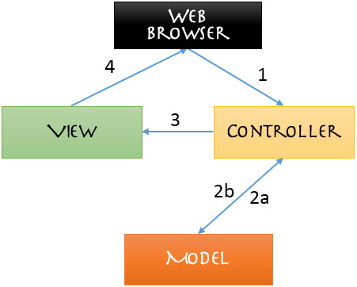

MVC Architecture
Problem Statement: Explain MVC in Rails in details with a diagram 
	MVC stands for Models, Views, and Controllers and it provides the architecure for rails.

	Models: A model represents the information (data) of the application and the rules to manipulate that data. In the case of Rails, models are primarily used for managing the rules of interaction with a corresponding database table.

	Views: Views represent the user interface of your application. In Rails, views are often HTML files with embedded Ruby code that perform tasks related solely to the presentation of the data.

	Controllers: Controllers provide the “glue” between models and views. In Rails, controllers are responsible for processing the incoming requests from the web browser, interrogating the models for data, and passing that data on to the views for presentation.

	With MVC system, the browser communicates with the controller. The controller contains code that allows it to make decisions based on the information the browser sends it. The controller then sends information to the model, which in turn sends information back to the controller.

	Once the controller has the information it needs, it pushes it out to the presentation layer,View, which determines the HTML code and other factors. 

	Then it sends that information back to the browser.
	<div align="center">
		
	</div>
</div>